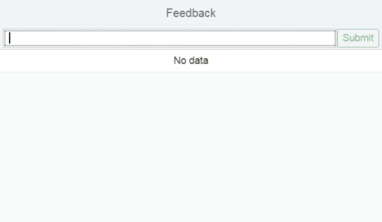
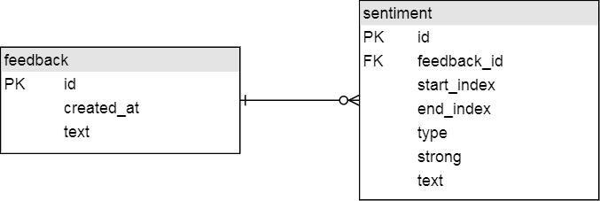
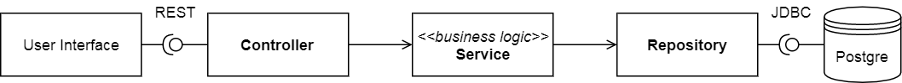
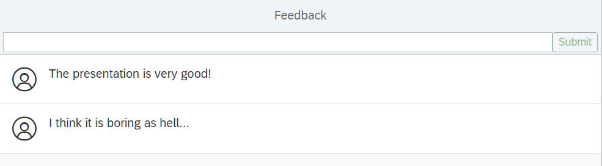
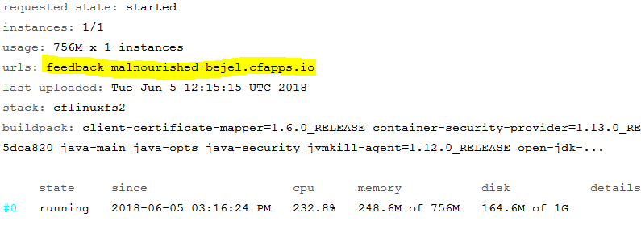
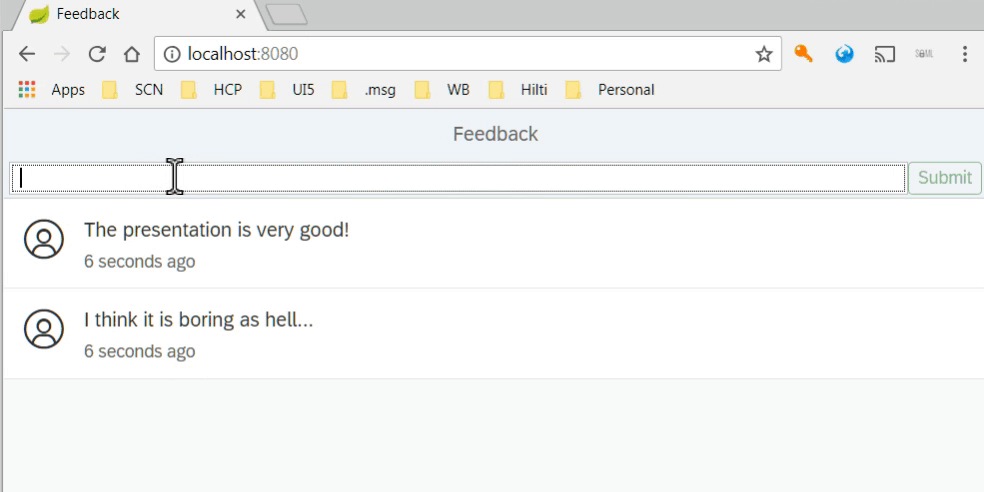
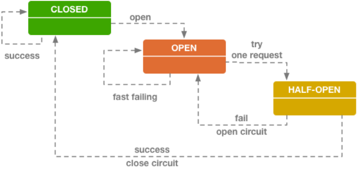
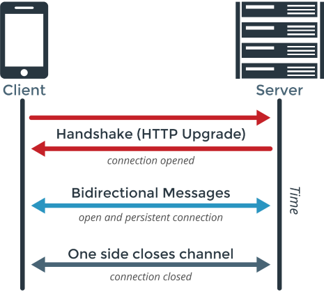

Building cloud native Java apps
Technology Intro
Spring
Started up as a dependency injection framework. Evolved to have a whole ecosystem around it (security, data access, web, cloud, etc).
Spring Boot
Central Spring project, which focuses on easier / automatic configuration, providing an embedded web server and enhanced environment-awareness.
PostgreSQL
Highly extendable, open source object-relational database management system.
Flyway
Open-source automatic database migration tool. Nicely integrated in Spring Boot.
The Feedback App
Overview
Simple anonymous feedback form:
- Responsive web app.
- Updates the data automatically.
- Analyses the feedback sentiments (type and intensity).
Demo
(Notice the sentiment font colour and weight)
Steps
- When the user opens the app, all the existing feedback should be loaded.
- When he creates a feedback, it should be broadcast to all other users.
- The sentiment analysis should be performed asynchronously and the results should be sent to all users.
Project Setup
Spring Initializer
- Go to start.spring.io.
- Generate a Maven project with Java and Spring Boot 1.5.x.
- Group: ro.msg.learning, name: feedback.
- Dependencies: Web, JPA, Websocket, Lombok, Flyway, PostgreSQL, Hystrix, DevTools.
Setup
- Generate the project and extract the archive contents inside your working folder.
- You can delete the .mvn fodler and the mvnw and mvnw.cmd files.
Add dependencies
We need to add some more dependencies (for Java 8 Time). Add the following inside the dependencies section of the pom.xml file.
<dependency>
<groupId>org.hibernate</groupId>
<artifactId>hibernate-java8</artifactId>
</dependency>
<dependency>
<groupId>com.fasterxml.jackson.datatype</groupId>
<artifactId>jackson-datatype-jsr310</artifactId>
</dependency>
Final touches
- Delete the src/test folder (we won't make any JUnit tests).
- Rename the src/main/resources/application.properties file to application.yml (change the extension).
- Extract the UI sources inside the src/main/resources/static folder.
- Open the project in your IDE.
Data model
Model
Our model will be fairly simple, with just two entities:
Steps
We need to tell the app how to connect to the local database. For the cloud, this is done automatically (via reconfiguration).
Afterwards we'll write the database migration for generating the schema and the Java entity classes to map the database tables (using JPA).
Configuration (YAML)
# src/main/resources/application-default.yml
# (this file will be loaded only when running locally)
spring:
datasource:
url: jdbc:postgresql://localhost:5432/postgres
username: postgres
password: # your pwd comes here
flyway.clean-on-validation-error: true
Database Migration
-- src/main/resources/db/migration/V1__Data_model.sql
create table feedback (
id serial not null primary key,
created_at timestamp,
text varchar(255)
);
create table sentiment (
id serial not null primary key,
end_index int4 not null,
start_index int4 not null,
strong boolean not null,
text varchar(255),
type varchar(255),
feedback_id int4 references feedback
);
Entities and enums
// ro.msg.learning.feedback.model.SentimentType
package ro.msg.learning.feedback.model;
public enum SentimentType {
POSITIVE, NEGATIVE, NEUTRAL
}
// ro.msg.learning.feedback.model.Sentiment
package ro.msg.learning.feedback.model;
import lombok.Data;
import javax.persistence.*;
@Data
@Entity
public class Sentiment {
@Id
@GeneratedValue(strategy=GenerationType.IDENTITY)
private int id;
private int startIndex;
private int endIndex;
@Enumerated(EnumType.STRING)
private SentimentType type;
private boolean strong;
private String text;
}
// ro.msg.learning.feedback.model.Feedback
package ro.msg.learning.feedback.model;
import lombok.Data;
import javax.persistence.*;
import java.time.LocalDateTime;
import java.util.List;
@Data
@Entity
public class Feedback {
@Id
@GeneratedValue(strategy=GenerationType.IDENTITY)
private int id;
private LocalDateTime createdAt;
private String text;
@OneToMany(cascade=CascadeType.ALL, fetch=FetchType.EAGER)
@JoinColumn(name="feedback_id")
private List<Sentiment> sentiments;
}
Simple Read
Design
- Repository: does low-level database operations.
- Service: contains the business logic.
- Controller: acts as a facade to the user interface.
Repository
// ro.msg.learning.feedback.repository.FeedbackRepository
package ro.msg.learning.feedback.repository;
import org.springframework.data.repository.Repository;
import ro.msg.learning.feedback.model.Feedback;
import java.util.List;
public interface FeedbackRepository
extends Repository<Feedback, Integer> {
List<Feedback> findAll();
}
Spring Data JPA will implement the interface for us.
Service
// ro.msg.learning.feedback.service.FeedbackService
package ro.msg.learning.feedback.service;
import lombok.RequiredArgsConstructor;
import org.springframework.stereotype.Service;
import ro.msg.learning.feedback.model.Feedback;
import ro.msg.learning.feedback.repository.FeedbackRepository;
import java.util.List;
@Service
@RequiredArgsConstructor
public class FeedbackService {
private final FeedbackRepository repository;
public List<Feedback> readAll() {
return repository.findAll();
}
}
Controller
// ro.msg.learning.feedback.controller.FeedbackController
package ro.msg.learning.feedback.controller;
import lombok.RequiredArgsConstructor;
import org.springframework.web.bind.annotation.*;
import ro.msg.learning.feedback.model.Feedback;
import ro.msg.learning.feedback.service.FeedbackService;
import java.util.List;
@RestController
@RequestMapping("/rest")
@RequiredArgsConstructor
public class FeedbackController {
private final FeedbackService service;
@GetMapping("/feedback")
public List<Feedback> readAll() {
return service.readAll();
}
}
Mock data
-- src/main/resources/db/migration/V2__Mock_data.sql
INSERT INTO feedback(text, created_at)
VALUES ('The presentation is very good!', timezone('utc', now()));
INSERT INTO feedback(text, created_at)
VALUES ('I think it is boring as hell...', timezone('utc', now()));
Testing
Start the application (run FeedbackApplication#main).
Open the browser at http://localhost:8080/.
First deployment
Intro
Let's deploy our small application into the Pivotal CF.
First we must prepare the cloud resources (database).
Then we need to package the application into a JAR.
Lastly we must define a manifest and push the app.
Packaging
All we need to do is run a mvn clean package (which will generate a JAR file in the target folder).
Eclipse: Right click on pom.xml -> Right Click -> Run As... -> Maven Install
IntelliJ: In the Maven pane (View -> Tool Windows -> Maven) -> Select "clean" and "package" -> Press the run button (from inside the pane)
Cloud
- Login to the Pivotal WS Console: https://console.run.pivotal.io.
- Go to the Marketplace (on the left menu).
- Search for ElephantSQL.
- Create a Tiny turtle instance (name = "feedback-database").
Manifest
# manifest.yml (this file is really in the root of the project)
---
applications:
- name: feedback
memory: 756M
instances: 1
random-route: true
# make sure that the JAR name is correct
path: ./target/feedback-0.0.1-SNAPSHOT.jar
services:
- feedback-database
Pushing
First login to the CF via cmd line:
cf login -a api.run.pivotal.ioThen, inside the project directory:
cf push
If you are inside msg network, set the proxy in the cmd line:
SET HTTP_PROXY=http://proxy.msg.de:3128
SET HTTPS_PROXY=http://proxy.msg.de:3128
Testing
In the command line, after pushing, you should get the application URI. Open it in your browser.
Going forward
For future deployments, you will just need to do mvn package and cf push, without the other steps. The application URL will remain the same.
When you are done, make sure to delete or stop the application from CF using the
Pivotal WS Console.
(Console -> Spaces -> Your space -> Apps -> Feedback -> Settings -> Delete)
Simple Create
Model
We need an extra model class to represent the data coming from the outside world.
// ro.msg.learning.feedback.model.InboundFeedback
package ro.msg.learning.feedback.model;
import lombok.Data;
@Data
public class InboundFeedback {
private String text;
}
Repository
First we add a new method to our repository interface:
// ro.msg.learning.feedback.repository.FeedbackRepository
void save(Feedback feedback);
Service
The service will perform two steps:
- Map the inbound feedback to a new entity.
- Call the save method of the repository.
// ro.msg.learning.feedback.service.FeedbackService
import ro.msg.learning.feedback.model.InboundFeedback;
import java.time.LocalDateTime;
import java.time.ZoneOffset;
// the rest of the class ...
public void createFeedback(InboundFeedback inbound) {
repository.save(toEntity(inbound));
}
private static Feedback toEntity(InboundFeedback inbound) {
Feedback feedback = new Feedback();
feedback.setCreatedAt(LocalDateTime.now(ZoneOffset.UTC));
feedback.setText(inbound.getText());
return feedback;
}
Controller
// ro.msg.learning.feedback.controller.FeedbackController
import ro.msg.learning.feedback.model.InboundFeedback;
// the rest of the class ...
@PostMapping("/feedback")
public void createFeedback(@RequestBody InboundFeedback feedback) {
service.createFeedback(feedback);
}
Testing
 We can create a new feedback, but we need to refresh the UI.Sentiments
First we'll rely on an external API to perform the sentiment analysis.
Then we'll add the logic for doing it locally if the external API does not work anymore.
Configuration (Java)
We need a small configuration class for holding the external API URL (and settings for the local logic).
// ro.msg.learning.feedback.config.TextAnalysisConfig
package ro.msg.learning.feedback.config;
import lombok.Data;
import org.springframework.boot.context.properties.ConfigurationProperties;
import org.springframework.context.annotation.Configuration;
@Data
@Configuration
@ConfigurationProperties(prefix = "ro.msg.learning.ta")
public class TextAnalysisConfig {
private String url;
}
Configuration (YML)
The values for this configuration are read from the application.yml file.
# src/main/resources/application.yml
ro.msg.learning.ta:
url: "https://feedbackp1940442392trial.hanatrial.ondemand.com/spet/ta/services/analize.xsjs?text={text}"
// ro.msg.learning.feedback.service.SentimentExtractor
package ro.msg.learning.feedback.service;
import lombok.RequiredArgsConstructor;
import lombok.extern.slf4j.Slf4j;
import org.springframework.stereotype.Component;
import org.springframework.web.client.RestTemplate;
import ro.msg.learning.feedback.config.TextAnalysisConfig;
import ro.msg.learning.feedback.model.Sentiment;
import java.util.*;
@Slf4j
@Component
@RequiredArgsConstructor
public class SentimentExtractor {
private final RestTemplate template = new RestTemplate();
private final TextAnalysisConfig config;
public List<Sentiment> extractFrom(String text) {
log.info("Calling external service for '{}'.", text);
Sentiment[] sentiments = template.getForObject(
config.getUrl(), Sentiment[].class, text);
return new LinkedList<>(Arrays.asList(sentiments));
}
}
Service
// ro.msg.learning.feedback.service.SentimentService
package ro.msg.learning.feedback.service;
import lombok.RequiredArgsConstructor;
import org.springframework.stereotype.Service;
import ro.msg.learning.feedback.model.Feedback;
import ro.msg.learning.feedback.repository.FeedbackRepository;
@Service
@RequiredArgsConstructor
public class SentimentService {
private final SentimentExtractor sentimentExtractor;
private final FeedbackRepository feedbackRepository;
public void createSentiments(Feedback feedback) {
feedback.setSentiments(sentimentExtractor
.extractFrom(feedback.getText()));
feedbackRepository.save(feedback);
}
}
Feedback Service
We need to call the sentiment service when creating a feedback (in the feedback service):
// ro.msg.learning.feedback.service.FeedbackService
// we add a new field:
private final SentimentService sentimentService;
// we adjust the createFeedback
public void createSentiments(Feedback feedback) {
// ... the rest of the method ...
// add this at the very end on the method:
sentimentService.createSentiments(feedback);
}
Testing
Try to create a feedback in English, with some sentiments (words like "good", "bad", etc).
If you are in msg network, you need to set the following VM options in your IDE:
-Dhttp.proxyHost=proxy.msg.de -Dhttp.proxyPort=3128 -Dhttps.proxyHost=proxy.msg.de -Dhttps.proxyPort=3128
Resilience
Reasoning
What if the external API is down?
Or we can't access the network?
We would have a lot of unprocessed feedback.
Options
[Homework] We could put the feedback into a queue and use a worker to retry calling the external API.
Or we could have a local extractor as fallback. This extractor will just search for a list of keywords.
Circuit breaker
To not make matters worse for the external API, we use a circuit breaker.
Config (JAVA)
// ro.msg.learning.feedback.config.TextAnalysisConfig
import org.springframework.cloud.netflix.hystrix.EnableHystrix;
import java.util.List;
// ...
// we add a new annotation on the class:
@EnableHystrix
public class TextAnalysisConfig {
// ...
// we add the following fields:
private List<String> positive;
private List<String> negative;
}
Config (YML)
# src/main/resources/application.yml
ro.msg.learning.ta:
url: "..." # the value of the url property stays the same
negative:
- bad
- horrible
positive:
- good
- nice
We need to add a couple of methods to the Sentiment Extractor:
// ro.msg.learning.feedback.service.SentimentExtractor
import ro.msg.learning.feedback.model.SentimentType;
// ...
private void appendOccurrencesOf(List<Sentiment> target, String text,
String word, SentimentType type) {
int length = text.length() - word.length();
for (int current = text.indexOf(word);
current >= 0 && current <= length;
current = text.indexOf(word, current + 1)) {
Sentiment sentiment = new Sentiment();
sentiment.setType(type);
sentiment.setStartIndex(current);
sentiment.setEndIndex(current + word.length());
sentiment.setText(word);
sentiment.setType(type);
sentiment.setStrong(false);
target.add(sentiment);
}
}
// ro.msg.learning.feedback.service.SentimentExtractor
import java.util.ArrayList;
// ...
private List<Sentiment> fallback(String text) {
log.info("Falling back to local analysis for '{}'.", text);
String lowerText = text.toLowerCase();
List<Sentiment> sentiments = new ArrayList<>();
for (String word : config.getPositive()) {
appendOccurrencesOf(sentiments, lowerText,
word, SentimentType.POSITIVE);
}
for (String word : config.getNegative()) {
appendOccurrencesOf(sentiments, lowerText,
word, SentimentType.NEGATIVE);
}
return sentiments;
}
Hystrix
Lastly we need to add an annotation on the extractFrom method:
@HystrixCommand(fallbackMethod = "fallback")Testing
First disconnect from the internet or change the URL from the application.yml to a wrong URL.
Afterwards, if you create new feedback, only the words from the application.yml should be highlighted.
Async Support
Reasoning
We don't like that the sentiment extraction is done synchronous. We can fix that easily.
First place the @Async annotation on the SentimentService#createSentiments method.
Async Configuration
// ro.msg.learning.feedback.config.AsyncConfig
package ro.msg.learning.feedback.config;
import org.springframework.context.annotation.Bean;
import org.springframework.context.annotation.Configuration;
import org.springframework.core.task.TaskExecutor;
import org.springframework.scheduling.annotation.EnableAsync;
import org.springframework.scheduling.concurrent.ThreadPoolTaskExecutor;
@EnableAsync
@Configuration
public class AsyncConfig {
@Bean
public TaskExecutor taskExecutor() {
ThreadPoolTaskExecutor executor = new ThreadPoolTaskExecutor();
executor.setCorePoolSize(4);
executor.initialize();
return executor;
}
}
Websocket
Reasoning
The user has to refresh the page to get the newest data. We don't like that.
One way of solving it is by using Websockets.
Intro
WebSocket is a protocol for bidirectional communication, supported by all major browsers.
Configuration
// ro.msg.learning.feedback.config.WebSocketConfig
package ro.msg.learning.feedback.config;
import org.springframework.context.annotation.Configuration;
import org.springframework.messaging.simp.config.MessageBrokerRegistry;
import org.springframework.web.socket.config.annotation.*;
@Configuration
@EnableWebSocketMessageBroker
public class WebSocketConfig extends AbstractWebSocketMessageBrokerConfigurer {
@Override
public void configureMessageBroker(MessageBrokerRegistry config) {
config.enableSimpleBroker("/topic");
config.setApplicationDestinationPrefixes("/app");
}
@Override
public void registerStompEndpoints(StompEndpointRegistry registry) {
registry.addEndpoint("/websocket").withSockJS();
}
}
Events
Now we have a "channel" for sending events to the UI, but without any actual events.
Spring has built-in support for application events, centered on the ApplicationEventPublisher interface.
Model
Each event type should have its own model class for passing event data. In our case, we will have two classes (one for Create and one for Update).
Both classes will just contain the feedback.
Feedback Created
// ro.msg.learning.feedback.event.FeedbackCreated
package ro.msg.learning.feedback.event;
import lombok.Data;
import ro.msg.learning.feedback.model.Feedback;
@Data
public class FeedbackCreated {
private final Feedback feedback;
}
Sentiments Extracted
// ro.msg.learning.feedback.event.SentimentsExtracted
package ro.msg.learning.feedback.event;
import lombok.Data;
import ro.msg.learning.feedback.model.Feedback;
@Data
public class SentimentsExtracted {
private final Feedback feedback;
}
Publishing events
To publish events, we just need to autowire the ApplicationEventPublisher, instantiate the event classes and pass them to the publishEvent method.
Services
// ro.msg.learning.feedback.service.FeedbackService
import org.springframework.context.ApplicationEventPublisher;
import ro.msg.learning.feedback.event.FeedbackCreated;
// ...
// in the createFeedback method, just after the repository.save:
publisher.publishEvent(new FeedbackCreated(feedback));
// ro.msg.learning.feedback.service.SentimentService
import org.springframework.context.ApplicationEventPublisher;
import ro.msg.learning.feedback.event.SentimentsExtracted;
// ...
// in the createSentiments method, at the end of the method:
publisher.publishEvent(new SentimentsExtracted(feedback));
Listening for events
The events are local to the Java application, so we need to listen for them and propagate them to the UI through the WebSocket.
This can be done very easily, using some annotations.
Controller
// ro.msg.learning.feedback.controller.FeedbackController
import org.springframework.messaging.simp.SimpMessagingTemplate;
import org.springframework.context.event.EventListener;
import ro.msg.learning.feedback.event.*;
// ... add a new field
private final SimpMessagingTemplate template;
// ... add two new methods
@EventListener
public void onFeedbackCreated(FeedbackCreated event) {
template.convertAndSend("/topic/feedback",
event.getFeedback());
}
@EventListener
public void onSentimentsExtracted(SentimentsExtracted event) {
template.convertAndSend("/topic/sentiment",
event.getFeedback());
}